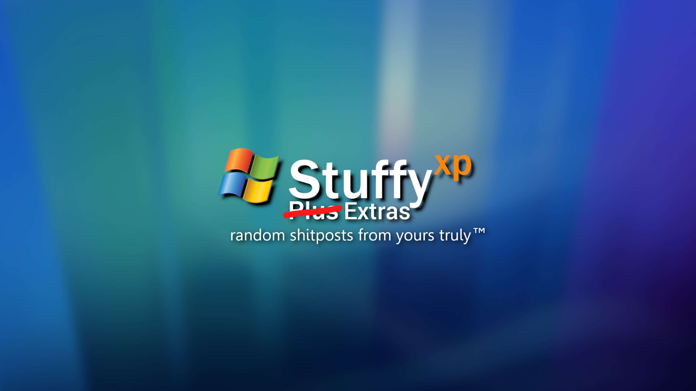

TODO, cover other stuffyxp history, like the gd on vista strike, and make a disambiguation page of Kit and stuffyxp.
This article is about the deleted YouTube channel. For its creator who used to be known as StuffyXP, see Kit. For the archived Discord server, see StuffyXP Hangout. For the website, see StuffyXP Website. For a list of available StuffyXP videos, see List of StuffyXP videos
StuffyXP


| Formerly known as | Yoshi Land0842 (2020-2021) Stuff Life (2021-2023) Stuffy (2023-2024) |
|---|---|
| Created by | Kit |
| Videos | 44 (including streams) |
| Subscribers | 238 |
| Views | 12,052 |
| Platform | YouTube |
| Created on | 2020-03-13 |
| State | Deleted |
| Link | N/A (formerly youtube.com/@StuffyXP) |
| Deleted on | 2025-03-14 |
StuffyXP (commongly abbreviated as STXP) was a tech-focused (formerly plushie-focused) YouTube channel ran and operated by Kit launched on 13 March 2020. It was closed and deleted in 14 March 2025 due to Kit’s mental health status.
History
Yoshi Land0842 and Stuff Life (2020-2022)
The channel was created on 13 March 2020 under the name Yoshi Land08421 but didn’t have content until April 2021 following the rebrand from Yoshi Land0842 to Stuff Life, and the release of Kit’s first video.
The video (along with its sequel, which was uploaded the same day) consisted of a showcase of Kit’s plushies, including Dogui; which was also used as the branding of StuffyXP until July 2024. The videos were edited on a mobile media editor called InShot on a Samsung Galaxy J5, which was a gift from Kit’s dad.
The channel’s upload schedule continued until December 2021. The last video from that year was a teaser for upcoming videos planned for 2022, although they were never made as Kit didn’t upload anything to the channel until 2023.
Channel revival and Stuffy (2023)
The channel was revived in 2023, notable uploads include a COVID-19-based video of their plushies chatting in a Zoom-like UX, with all of them ““talking”” (in reality just Kit making high-pitched sounds.) at the same time (along its sequel), and several other short films featuring Kit’s plushies.
Though I might think of them as cringe, it was child me that truly had some peak imagination, absolute cinema, one might say.
- Kit’s thoughts regarding the plushie era of StuffyXP, dated 2024
Additionally, 2023 also marked the start of the StuffyXP tech era (which co-existed with the plush videos), as videos featuring TheCeleryPC consisting of using VirtualBox for installing operating systems like Windows XP and Windows Vista were uploaded. These videos were recorded with a camera, as Kit was unaware of screencast software at that time.
Other notable videos include Kit re-installing Windows 7 on TheCeleryPC (which was the first public appearance of the computer itself, as the monitor was the only component shown prior to this video).
On 3 October 2023, the Stuff Life channel was rebranded to Stuffy, introducing a new version of the Dogui branding used in the profile picture and banner. The StuffyYT20 handle was used for the channel for a couple of months before switching to StuffyXP.
StuffyXP (2024-2025)
The channel recieved an update in July 2024, moving away from the Dogui branding to a new Windows Whistler-themed branding. This update also formally introduced the StuffyXP name.
Username origin
The origin of the StuffyXP name actually comes back from Kit’s old Reddit account. In the account creation process, Kit thought of appending a Windows version to the name as Stuffy wasn’t available. They originally thought of Stuffy7, but then changed it at the last minute to StuffyXP after realizing that it might cause issues.
YouTube Channels
- A VMware First-Timer installs Windows XP! - 548 views - Uploaded 2024-02-13
- Installing modern programs on Windows Vista! - 742 views - Uploaded 2024-07-23
- The Windows XP Vibes are here! – Whistler Beta 2 - 140 views - Uploaded 2024-08-04
- A ReactOS video but everything goes kinda normal… - 525 views - Uploaded 2024-08-18
- Haiku – The modern implementation of BeOS! - 1,964 views - Uploaded 2024-08-30
- Is the Intel Pentium F00F bug possible on 86Box? - 1,054 views - Uploaded 2024-09-23
- The forgotten Windows Competitor… - 346 views - Uploaded 2024-09-28
- Geometry Dash… on Windows Vista!? - 687 views - Uploaded 2024-12-04
- Using Windows 11 for the first time! - 984 views - Uploaded 2024-12-21
- So i installed Arch Linux the other day… - 942 views - Uploaded 2025-01-10
- VMware’s Early Days… (v1.0-294) - 1,145 views - Uploaded 2025-02-25
- More early versions of virtualization software! (VirtualBox and Virtual PC) - 172 views - Uploaded 2025-03-05
Data fetched before the closure of the channel in 14 March 2025.
StuffyXP Extras

| Formerly known as | Sttuf Blogs (2021-2023) Stuffy + (2023-2024) StuffyXP Plus (Mid 2024) |
|---|---|
| Created by | Kit |
| Videos | 11 |
| Subscribers | 19 [^2] |
| Views | 177 (estimated)[^2] |
| Platform | YouTube |
| Created on | 2021-06-26 |
| State | Deleted |
| Link | N/A (formerly youtube.com/@StuffyXPExtras) |
| Deleted on | 2025-03-14 |
For a list of StuffyXP Extras videos, see List of StuffyXP videos § StuffyXP Extras
StuffyXP Extras was a YouTube channel owned and operated by Kit created on 26 June 2021. Its primary focus was being a place for “random shitposts, behind-the-scenes footage”, etc.
The channel’s subscriber count was low, and mainly featured videos like Kit’s voice reveal, test footage, raw footage and more.
Judging by the brand account name “Sttuf Blogs”, it was originally Kit’s vlogs channel but became an extras channel around 2023, it had Dogui as its primary branding.
Addionally, Kit has used the channel for backup purposes, such as when the StuffyXP channel was false-striked due to Geometry Dash…on Windows Vista!?.
StuffyXP Vlogs


| Formerly known as | Stuffy Vlogs (2023-2024) |
|---|---|
| Created by | Kit |
| Videos | 1 |
| Subscribers | 15 |
| Views | 15 |
| Platform | YouTube |
| Created on | 2021-07-14 |
| State | Deleted |
| Link | N/A (formerly youtube.com/@StuffyXPVlogs) |
| Deleted on | 2025-03-14 |
For a list of StuffyXP Vlogs videos, see List of StuffyXP videos § StuffyXP Vlogs
StuffyXP Vlogs was a YouTube channel ran and operated by Kit created on 14 July 2021. Its suggested focus was being Kit’s vlog channel, but that never came to life due to “no interesting events happening in Kit’s life”, while in reality was the lack of interest and equipment for creating vlog-style videos.
The channel never had any sort of content but was updated every time something needed to be updated (e.g branding, links, copyright), though one test video was uploaded to the channel sometime around March 2024 to test the YouTube functionality of Carl-Bot.
A video for the channel was planned sometime in late 2024, allegedly titled The $5 Wireless Keyboard & Mouse Combo – Will they work?, aluding to its name, consisted of Kit testing a keyboard & mouse combo whose value was $5 (~130 HNL). The video was cancelled due to the combo not being able to connect to a computer due to a missing USB-to-wireless adapter, which wasn’t included in the box. Kit still owns this combo to this day.
The channel was originally known as MisAnimacionesPencil2D (english: MyAnimsPencil2D) which was going to be used as a place for Kit to upload his animations made in Pencil2D, a freeware animation program. The channel was eventually converted to Stuffy Vlogs sometime around in mid 2023.
Stuffy 64


| Formerly known as | Stuff Life 64 (2023-2024) |
|---|---|
| Created by | Kit |
| Videos | 51 |
| Subscribers | 178 |
| Views | 40,227 |
| Platform | YouTube |
| Created on | 2023-08-04 |
| State | Deleted |
| Link | N/A (formerly youtube.com/@Stuffy64_) |
| Deleted on | 2025-03-14 |
For a list of Stuffy 64 videos, see List of StuffyXP videos § Stuffy 64
Stuffy 64 was a gaming-focused YouTube channel ran and operated by Kit created on 4 August 2023. It was deleted in March 2025 following the StuffyXP closure.
It was the only channel that retroactively co-exited with StuffyXP’s video uploads. It later surpassed StuffyXP in subscribers for almost a month. It has been stated by Kit that “the channel’s name is a reference to both the Nintendo 64 and Super Mario 64”.
The channel’s first uploads were YouTube Shorts of Kit’s Super Mario 64 save file, one of these being footage of Kit getting to the credits sequence in the game, and another one was them showcasing some Super Mario 64 bugs and glitches, like how to get to Tower of the Wing Cap without directly looking at the ceiling in Peach’s Castle, or clipping through walls via item boxes.
The channel was revived in mid 2024, debuting the 96Flashbacks video series. The series lasted 6 episodes out of the 8 episodes originally planned, Episode 7 was cancelled after Kit lost their save file after reinstalling Windows.
Around mid-to-late 2024, the channel was revived again, now with a focus on the Mario & Luigi franchise, mainly Mario & Luigi: Bowser’s Inside Story for the Nintendo DS. This era was the time where both the subscriber count and video count increased significantly due to how easy it was to make these videos. Even at one point on the channel’s lifetime, the channel surpassed StuffyXP in susbcribers.
The channel’s content at that time included videos like the Mario & Luigi: Bowser’s Inside Story debug room, gauntlet and several other gameplay bits. Videos regarding Mario & Luigi: Partners in Time and Mario & Luigi: Superstar Saga were also upoaded, but were far less frequent than Bowser’s Inside Story.
Following the introduction of Thei5Lappy after TheCeleryPC’s death, Geometry Dash videos were also uploaded, most notably level showcases, bugs, and achievements.
StuffyXP VODS
StuffyXP VODS was a YouTube channel owned and operated by Kit created in 22 December 2024. Its main purpose was to archive streams from Kit, but it never eventually uploaded anything, and the latter was deleted when the StuffyXP channels were moved to their respective separate emails.
StuffyXP Network
Other projects have also been made throughout 2024 under the StuffyXP umbrella, officially referred to collectively as the “StuffyXP Network”:
- StuffyXP Website: Kit’s personal website while they were known as StuffyXP, the precursor to HoriWebsite and other iterations. Initial development in late February 2024, discontinued early January 2025 in favor of HoriWebsite.
- StuffyXP Hangout: A Discord Server primarily meant for fans of the StuffyXP channel and the wider Network to hangout in. It is the successor to Stuffy’s Place in early October 2024, it was shut down on March 2025 along with the StuffyXP Closure and later successed by HoriServer (2).
- StuffyXP Extras (& Co.): With the Whistler-themed rebrand of StuffyXP, other StuffyXP channels have received StuffyXP naming as well, with the exception of Stuffy 64. In November 2024, Stuffy+ had been renamed to StuffyXP Extras, and Stuffy Vlogs as StuffyXP Vlogs.
Closure
On 16 March 2025, the StuffyXP YouTube channels were officially shut down, Kit chose to use YouTube’s “Hide your channel” feature, a technicality that allows for future reclamation, though no such decision has been made.
The main reason of the closure was essentially Kit’s lack of interest in content creation and their wintuber career, as stated some time ago:
It is really hard to come up with a good video idea, and most of the other videos ideas are kinda lame.
One thing that i never even liked is that whenever you do an overused video idea (like idk installing some random longhorn build) get views while original experiments do not, which decreased my interest.
– Kit, December 2024
Addionally, Kit’s mental health status was getting worse, the only way for them to achieve peace was to get rid of some stuff, Kit didn’t want to just abandon the channels, they wanted them gone. Kit is also against the archival of the StuffyXP content.
The StuffyXP channel was re-enabled on 1 April 2025 as an April Fools joke, but it only lasted for 1 day, as the joke.
References
-
It originated from Kit’s Mario Kart DS online play username, the name originally was intended to be Yoshi Island0842, but the 14 character limit shortened the username to Yoshi Land0842. ↩
Debug SpringViewer 2.8.5606.nekori64
Debug Axeon KuroWiki Release Candidate 1 Version 7.0.4456.kitsixtyfour.251223-1823